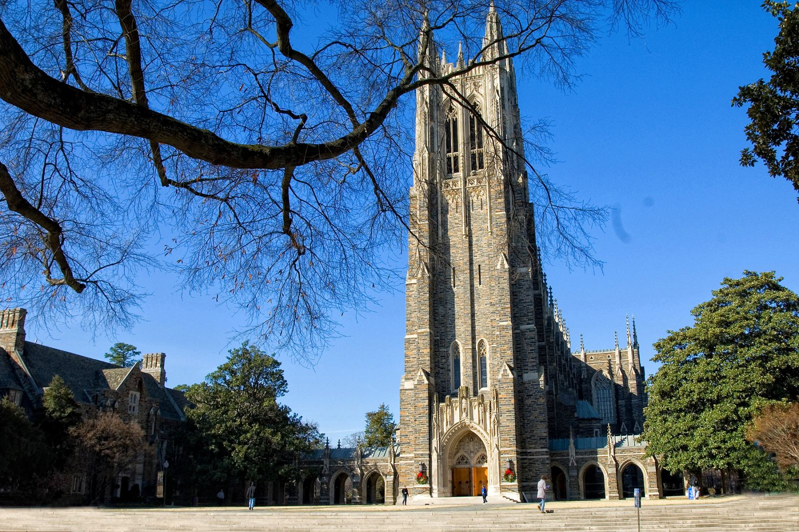

Duke is a national university located in Durham, North Carolina. Along with UNC-Chapel Hill and North Carolina State University, Duke forms the Research Triangle of North Carolina, which has the highest number of PhDs per area. It is located in a suburban setting and its three campuses-West, East, and Central-total out to be 8,709 acres. Duke is most known for its strong basketball team, the Blue Devils, but it also has very strong academic programs, boasting incredibly high med school and law school acceptance rates. The student to faculty ratio is 7:1. Duke uses a semester-based academic calendar, with many of its students finding internships through Duke's national services during the summer. Duke's most notable alumni are Grant Hill, Christian Laettner, Shane Battier, Kyrie Irving, and Melinda Gates, whose generous donations led to the creation of the Sarah P. Duke Gardens.
